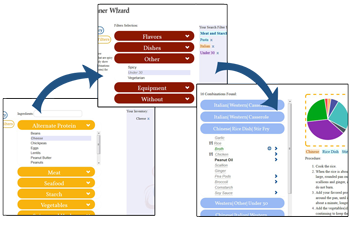

Dinner Wizard takes a list of ingredients that you have in your fridge, kitchen or pantry and suggests ways to combine them, according to any other options you choose.
First, you'd probably want to build a list of ingredients inside Dinner Wizard that reflects what you actually have.
The accordion in the left panel on the Inventory page contains ingredients sorted by category. You can also use the search box to find ingredients directly, without browsing through the accordion.
Clicking ingredients in the accordions or selecting them in the search box will add them to your Dinner Wizard Inventory, which appears in the right panel.
Removing items from your Inventory is as easy as clicking them.
You can also remove everything from your Dinner Wizard Inventory by clicking the 'Clear Inventory' button below the Inventory box.
Search Filters are used to restrict your search to potential ingredient combinations matching whichever descriptions you choose.
Filters chosen under the Flavor header approximate one of the flavors from the region they name.
Applying filters to your search without leaving the page can be done by clicking the 'Search' button.
Navigating to the Combinations page will also automatically apply your filters to your search. Excluding ingredients or equipment from your search requires you to have ingredients in your Inventory.
More descriptions of each filter are available on the page.
Combinations are the heart of Dinner Wizard. Every ingredient that Dinner Wizard lists can be combined with others in at least one way. On the Combinations page, what you'll see are the combinations matching both the ingredients you placed in your Dinner Wizard Inventory and whichever search filters you chose.
Combinations are listed, as you may notice, by their primary three search filters.This is because combinations in
Some information aside from potential preparation procedures for combinations is also available on the Combinations page. Upon selecting a combination, you'll see a pie chart representation of the approximate suggested ingredient ratios for that combination. Interacting with the chart itself will display which ingredient belongs to which wedge of the chart.
Some ingredients will also be interactive, providing more information as to how they can be substituted, and, in some cases, how they can be made.
Explore ingredient combinations yourself and see what you discover!
That's all for now!
You can find more information or view the guide again on the page.